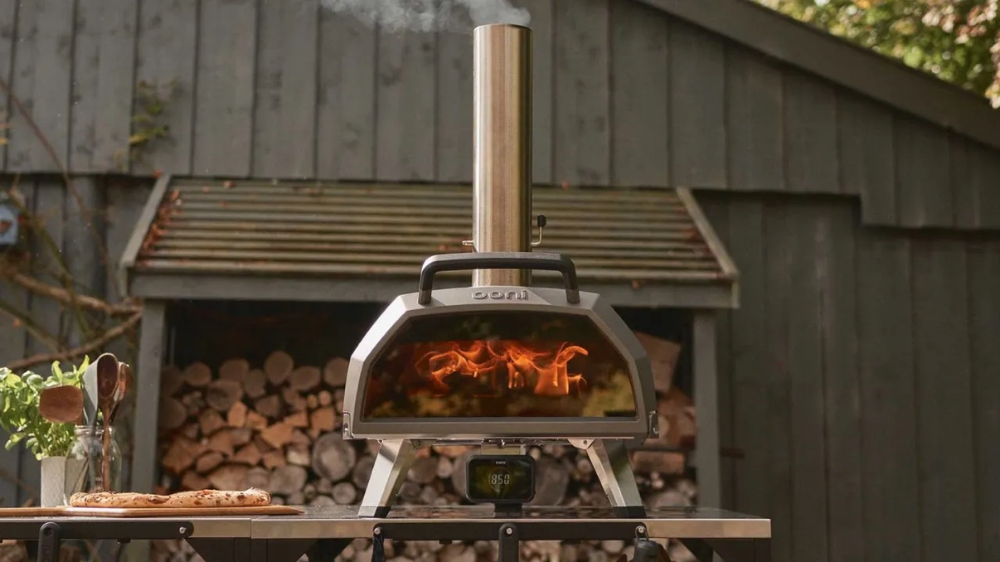
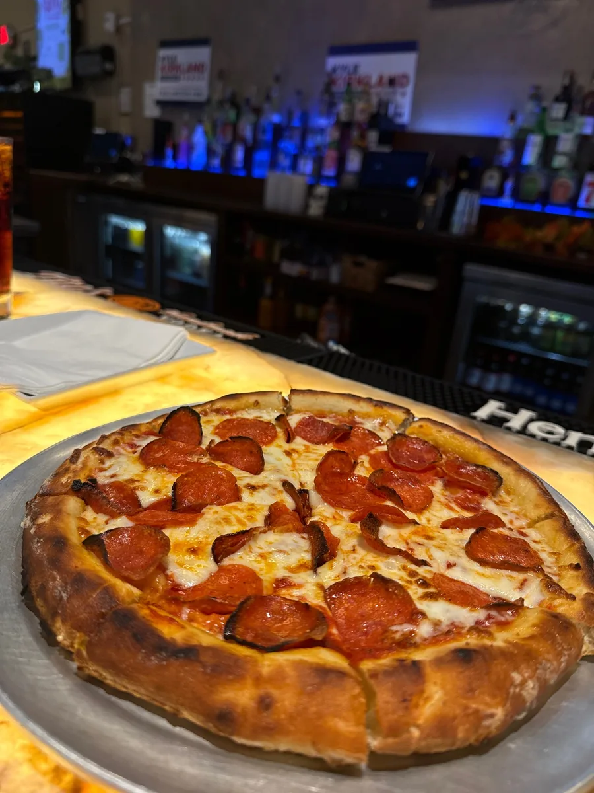

Whole pizzas, baked to order in the Tower District, Fresno
One person, one pushcart, one price.
Whole pies only, $10 each. No slices. Three or four offerings a night, and the size adjusts to the topping: a cheese pie is bigger, a pie with pricier toppings starts with less dough. No inches on the menu.
| Pie | Price | Notes |
|---|---|---|
| Cheese | $10 | The baseline. |
| Cheese and pepperoni | $10 | The other baseline. Pre-sliced pepperoni. |
| Rotating pie | $10 | One more offering, changes with demand. |
Ingredients are capped at $2.50 a pie. That is what keeps a $10 pie working. No fresh produce, no raw meat, no sausage.
You order, the pie is assembled to order, baked to order in about a minute, and served immediately. Nothing is cooked in advance, nothing is held for later sale, and food left at the end of the day is disposed of.
Dough, sauce, cheese, topping, built on the cart when you order it.
About a minute in the Ooni Karu 2 Pro, on propane, at high heat.
Straight off the cart, hot, right away. That is the whole service.


The cart is a non-motorized pushcart, pushed about half a mile from home to the Tower Theatre area, and pushed home after. It is stored at home after the county evaluates the storage site.
Hours and exact spot are posted in the High Tower District group when the cart is out. Early evening, not late night.
This is a Compact Mobile Food Operation (CMFO): limited food preparation only, one operator, no employees. The county packet was received November 6, 2026 from Fresno County Environmental Health, and the permit application is in progress. Nothing here is sold until the permit is in hand.
Separate from selling, and not the same money: the Block Party Pizza Competition is a community event in the South Tower District, $5 a head, all you can eat, nonprofit-style, no profit kept. Cooks eat free, ingredients are free to cooks, and the judged competition is optional, with a stake declared before a pizza is built. Categories are Cheese $5, Pepperoni $6, Vegetarian $6, Meat Lovers $8, Supreme $8, as maximum ingredient budgets per pizza, not prices.
First test run: Monday night, October 26, 2026, in front of my house, 721 E La Sierra Dr, Fresno. More to come.
One price, one cost cap, one cart, done right and done lawfully. A cook who learns to make a great pizza inside a budget gets better every time. In ten years, the best pizza cooks in America come out of the Tower District, because practice under real economics is what makes mastery.